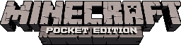

This is an open-source reverse-engineering and desktop preservation project based on Minecraft: Pocket Edition 0.6.1.
We bring the classic early PE experience to desktop operating systems (Linux, Windows, macOS) with genuine keyboard & mouse controls, infinite procedural Beta 1.7.3 terrain, dynamic lighting, and integrated RakNet multiplayer.
Binaries are built directly from source via GitHub Actions CI for every commit.
| PLATFORM | ARCHITECTURE | PACKAGE | STATUS |
|---|---|---|---|
| 🪟 Windows | x86_64 | minecraftpe-windows.zip | ACTIVE CI |
| 🐧 Linux (Client) | x86_64 | minecraftpe-linux.zip | ACTIVE CI |
| 🖥️ Linux (Server) | x86_64 | minecraftpe-server-linux.zip | ACTIVE CI |
| 🍎 macOS | Universal / ARM64 | minecraftpe-macos.zip | ACTIVE CI |
| 📦 Game Assets | All Platforms | data.zip (Required) | REQUIRED |
1. Download the executable zip for your platform and data.zip.
2. Extract the binary and extract data.zip into the same folder.
(The 'data' folder must be placed directly beside the executable)
3. Launch MinecraftPE (or MinecraftPE.exe on Windows).
4. Enjoy genuine 2013 Minecraft nostalgia!